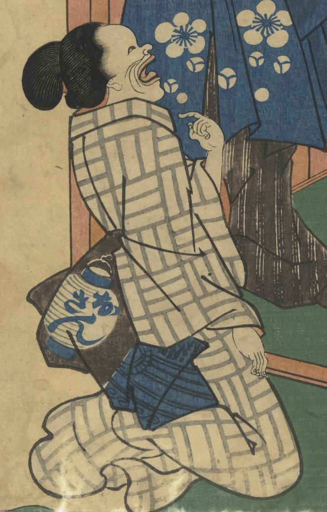

おさん狐が女性の姿に化けている。帯に「おさん」と書かいた提灯が描かれている。
著作者：一恵斎芳幾／出典：親書誌：U426_nichibunken_0408：心学身之要慎；シンガク ミ ノ ヨウジン／日付：2015／資源識別子：U426_nichibunken_0408_0003_0000
Copyright (c)2010- International Research Center for Japanese Studies, Kyoto, Japan. All rights reserved.